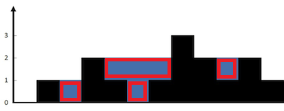
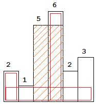

单调栈¶
单调栈是一种特殊的栈，可以用来维护某种逻辑信息，在很多题目中非常有效。 这是一种数据结构，所以它通常服务于题目的解法。也就是说，我们需要先分析题意，设计出某种解法，然后要自行判断是否需要单调栈这种数据结构。
下面几道题目很适合用视频或者动态gif图来讲解，文字确实有点干瘪。
接雨水¶
详情参考 LeetCode 42
题目描述: 给定 n 个非负整数表示每个宽度为 1 的柱子的高度图，计算按此排列的柱子，下雨之后能接多少雨水。
示例:
输入: [0,1,0,2,1,0,1,3,2,1,2,1]
输出: 6

题解：这里需要一个单调减栈，遇到比栈顶高的柱子，说明可以前面有柱子可以存雨水, 我们就要进入雨水的计算。 计算雨水的核心是把雨水如图分成4个矩形.
参考代码
class Solution {
public:
int trap(vector<int>& height) {
if(height.empty()) return 0;
int n = height.size(), cnt = 0;
stack<int> s;
for(int i = 0; i < n; ++i) {
int h = height[i];
while(!s.empty() && height[s.top()] < h) {
int j = s.top(); s.pop();
if(!s.empty()) {
int distance = i - s.top() - 1;
int delta_h = min(height[s.top()], h) - height[j];
cnt += distance * delta_h;
}
}
s.push(i);
}
return cnt;
}
};
柱状图中的最大矩形¶
详情参考LeetCode 84
题目描述：给定 n 个非负整数，用来表示柱状图中各个柱子的高度。每个柱子彼此相邻，且宽度为 1。求在该柱状图中，能够勾勒出来的矩形的最大面积。
示例：
输入: [2,1,5,6,2,3]
输出: 10

题解：这个单调递增栈也不难，遇到比栈顶低的柱子，就要进入矩形面积的计算。这道题的关键在于理清楚如何求矩形面积。
参考代码
class Solution {
public:
int largestRectangleArea(vector<int>& heights) {
if(heights.empty()) return false;
stack<int> s;
heights.push_back(0);
int n = heights.size(), max_area = 0;
for(int current_i = 0; current_i < n; ++current_i) {
int current_h = heights[current_i];
while(!s.empty() && heights[s.top()] > current_h) {
int top_i = s.top(); s.pop();
int distance = (s.empty())? current_i: current_i-s.top()-1;
int area = heights[top_i] * distance;
max_area = max(max_area, area);
}
s.push(current_i);
}
return max_area;
}
};
最大矩形¶
详情参考LeetCode 85
题目描述：给定一个仅包含 0 和 1 的二维二进制矩阵，找出只包含 1 的最大矩形，并返回其面积。
示例：
输入:
[
["1","0","1","0","0"],
["1","0","1","1","1"],
["1","1","1","1","1"],
["1","0","0","1","0"]
]
输出: 6
分析：这个是柱状图最大矩形的扩展, 上面的矩阵对应：
[
["1","0","1","0","0"],
["2","0","2","1","1"],
["3","1","3","2","2"],
["4","0","0","3","0"]
]
参考代码
class Solution {
public:
int maximalRectangle(vector<vector<char>>& matrix) {
if(matrix.empty()) return 0;
int n = matrix[0].size(), rst = 0;
vector<int> heights(n, 0);
for(int i = 0; i < matrix.size(); ++i) {
for(int j = 0; j < n; ++j) {
if(matrix[i][j] == '1') {
heights[j]++;
}
else {
heights[j] = 0;
}
}
rst = max(rst, maxMatrix(heights));
}
return rst;
}
private:
int maxMatrix(vector<int>& heights) {
if(heights.empty()) return 0;
stack<int> s;
heights.push_back(0);
int n = heights.size(), rst = 0;
for(int i = 0; i < n; ++i) {
int hi = heights[i];
while(!s.empty() && heights[s.top()] > hi) {
int j = s.top(); s.pop();
int distance = (s.empty())? i : i - s.top() - 1;
rst = max(rst, distance * heights[j]);
}
s.push(i);
}
return rst;
}
};
移掉K位数字¶
题目描述: 给定一个以字符串表示的非负整数 num，移除这个数中的 k 位数字，使得剩下的数字最小。
- num 的长度小于 10002 且 ≥ k。
- num 不会包含任何前导零。
示例:
输入: num = "1432219", k = 3
输出: "1219"
解释: 移除掉三个数字 4, 3, 和 2 形成一个新的最小的数字 1219。
输入: num = "10200", k = 1
输出: "200"
解释: 移掉首位的 1 剩下的数字为 200. 注意输出不能有任何前导零。
输入: num = "10", k = 2
输出: "0"
解释: 从原数字移除所有的数字，剩余为空就是0。
解析: 这里可以考虑一个单调递增栈：如果当前元素比栈顶元素小，那就把栈顶元素弹出。被弹出的元素就是被删除，因为删除次数有限，所以避免删除过多的元素。另外，要注意边界问题。
参考代码
class Solution {
public:
string removeKdigits(string num, int k) {
stack<char> s;
int len = num.size() - k;
for(auto &digit: num) {
while(k > 0 && !s.empty() && digit < s.top()) {
s.pop();
k--;
}
s.push(digit);
}
string rst;
while(!s.empty() > 0) {
rst.push_back(s.top());
s.pop();
}
rst = string(rst.end()-len, rst.end());
for(int i = rst.size()-1; i >= 0; --i) {
if(rst[i] == '0')
rst.pop_back();
else
break;
}
reverse(rst.begin(), rst.end());
return rst.empty() ? "0" : rst;
}
};
123模式¶
详情参考LeetCode
题目描述: 给定一个整数序列：a1, a2, ..., an，一个132模式的子序列 ai, aj, ak 被定义为：当 i < j < k 时，ai < ak < aj。设计一个算法，当给定有 n 个数字的序列时，验证这个序列中是否含有132模式的子序列。
分析: 这个问题不是那么容易解决的。
- 首先，我们从左到右遍历一遍数组，找出每个元素的左侧元素的最小值，我们记做 premin[i] = min_{j < i} a[j];
- 接下来，我们要在 a[i] 的右侧，找到一个整数 j > i 满足 premin[i] < a[j] < a[i]。
在第二步中，我们需要用到单调递减栈。我们从右到左遍历数组，当便利到 a[i] 时，我们先根据 premin[i] 来弹出栈的元素，直到栈顶元素大于 premin[i]。接着我们判断 a[i] 是否大于栈顶元素。
参考代码
class Solution {
public:
bool find132pattern(vector<int>& nums) {
int n = nums.size();
if(n < 3) return false;
vector<int> premin(n);//前缀最小数组
int mi = nums[0];
for(int i = 1; i < n - 1; ++i) {
premin[i] = mi;
mi = min(mi, nums[i]);
}
stack<int> s; //单调递减栈
s.push(nums[n - 1]);
for(int i = n - 2; i > 0; --i) {
int mi = premin[i];
while(!s.empty() && mi >= s.top()) {
s.pop();
}
if(!s.empty() && s.top() < nums[i]) {
return true;
}
if(s.empty() || nums[i] < s.top()) {
s.push(nums[i]);
}
}
return false;
}
};
求下一个更大的元素¶
详情参考LeetCode
题目描述: 给定一个循环数组（最后一个元素的下一个元素是数组的第一个元素），输出每个元素的下一个更大元素。数字 x 的下一个更大的元素是按数组遍历顺序，这个数字之后的第一个比它更大的数，这意味着你应该循环地搜索它的下一个更大的数。如果不存在，则输出 -1。
分析: 这是一个用单调栈的经典问题，很多问题可以转化成这个问题来求解。 我们使用一个单调递减栈来解决这个问题: 如果当前的元素大于栈顶的元素，那么栈顶的元素就已经找到了它的下一个更大的元素。
参考代码
class Solution {
public:
vector<int> nextGreaterElements(vector<int>& nums) {
if(nums.empty()) return {};
int n = nums.size(), index = 1;
vector<int> rst(n, -1);
stack<int> s; //单调递增栈
for(int i = 0; i < 2 * n; ++i) {
int index = i % n;
while(!s.empty() && nums[s.top()] < nums[index]) {
if(rst[s.top()] == -1)
rst[s.top()] = nums[index];
s.pop();
}
s.push(index);
}
return rst;
}
};
可能的二分法¶
详情参考LeetCode 886
题目描述:
给定一组人编号为 1, 2, ..., N, 我们想把这些人分成两组，要求两个互不喜欢的人不能分在一组。我们用数组 dislikes[i] = [a, b] 来表示 a 和 b 之间互不喜欢。判断能否成功分割。
示例:
输入：N = 4, dislikes = [[1,2],[1,3],[2,4]]
输出：true
解释：group1 [1,4], group2 [2,3]
分析: 1. 可以使用染色法表示人被分在哪一组; 2. 使用栈来完成dfs。
参考代码
class Solution {
public:
bool possibleBipartition(int N, vector<vector<int>>& dislikes) {
vector<vector<int>> graph(N+1);
vector<int> color(N+1, 0); // 使用 +1/-1表示两类
for(auto edge: dislikes) {
graph[edge[0]].push_back(edge[1]);
graph[edge[1]].push_back(edge[0]);
}
for(int i = 1; i <= N; ++i) {
if(color[i] != 0) continue;
stack<int> s; //使用栈来模拟dfs
s.push(i);
color[i] = 1; // 默认类型为1
while(!s.empty()) {
int node = s.top(); s.pop();
int c = color[node];
for(auto next: graph[node]) {
if(color[next] * c > 0) {
return false;
}
else if(color[next] == 0) {
s.push(next);
color[next] = -c;
}
}
}
}
return true;
}
};